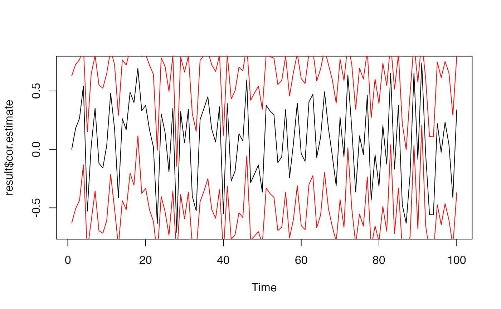
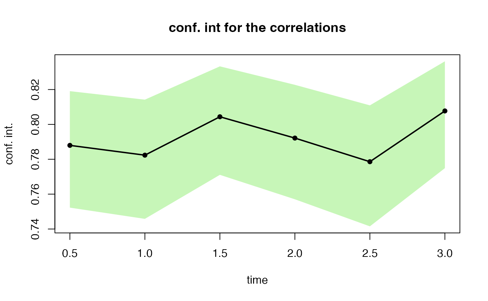

This function performs correlation tests for the shocks generated by simshocks.
gaussian (bivariate) shocks, with correlation, generated by simshocks (if Gaussian copula).
indicates the alternative hypothesis and must be one of "two.sided", "greater" or "less".
which correlation coefficient is to be used for the test : "pearson", "kendall", or "spearman".
confidence level.
a list with 2 components : estimated correlation coefficients, and confidence intervals for the estimated correlations.
D. J. Best & D. E. Roberts (1975), Algorithm AS 89: The Upper Tail Probabilities of Spearman's rho. Applied Statistics, 24, 377-379.
Myles Hollander & Douglas A. Wolfe (1973), Nonparametric Statistical Methods. New York: John Wiley & Sons. Pages 185-194 (Kendall and Spearman tests).
nb <- 500
s0.par1 <- simshocks(n = nb, horizon = 3, frequency = "semi",
family = 1, par = 0.2)
s0.par2 <- simshocks(n = nb, horizon = 3, frequency = "semi",
family = 1, par = 0.8)
(test1 <- esgcortest(s0.par1))
#> $cor.estimate
#> Time Series:
#> Start = c(0, 2)
#> End = c(3, 1)
#> Frequency = 2
#> [1] 0.17019209 0.09279227 0.18718789 0.22185835 0.14601034 0.19899949
#>
#> $conf.int
#> Time Series:
#> Start = c(0, 2)
#> End = c(3, 1)
#> Frequency = 2
#> Series 1 Series 2
#> 0.5 0.083751429 0.2540906
#> 1.0 0.005143531 0.1790261
#> 1.5 0.101157771 0.2704393
#> 2.0 0.136829774 0.3036416
#> 2.5 0.059076143 0.2307465
#> 3.0 0.113285783 0.2817730
#>
(test2 <- esgcortest(s0.par2))
#> $cor.estimate
#> Time Series:
#> Start = c(0, 2)
#> End = c(3, 1)
#> Frequency = 2
#> [1] 0.7879729 0.7823533 0.8043743 0.7921554 0.7786005 0.8077114
#>
#> $conf.int
#> Time Series:
#> Start = c(0, 2)
#> End = c(3, 1)
#> Frequency = 2
#> Series 1 Series 2
#> 0.5 0.7522620 0.8190677
#> 1.0 0.7458304 0.8141866
#> 1.5 0.7710721 0.8332881
#> 2.0 0.7570532 0.8226977
#> 2.5 0.7415392 0.8109245
#> 3.0 0.7749064 0.8361767
#>
#par(mfrow=c(2, 1))
esgplotbands(test1)

esgplotbands(test2)
